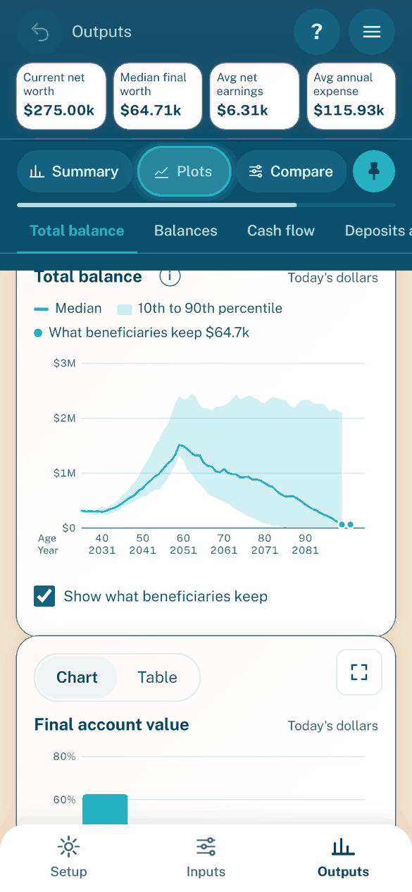
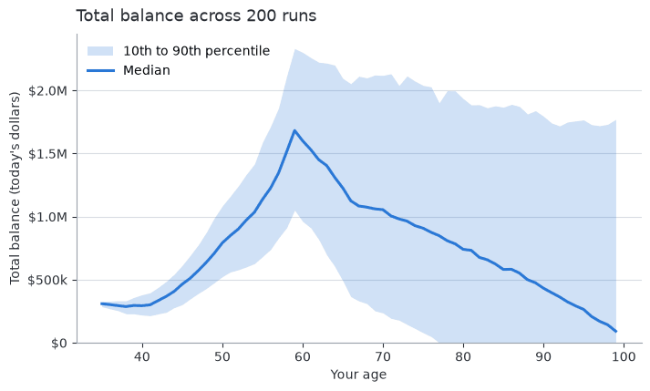
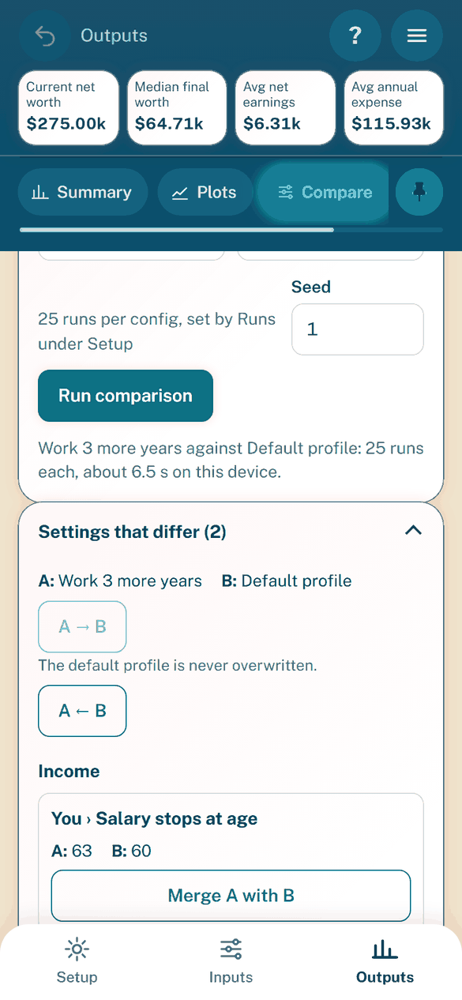
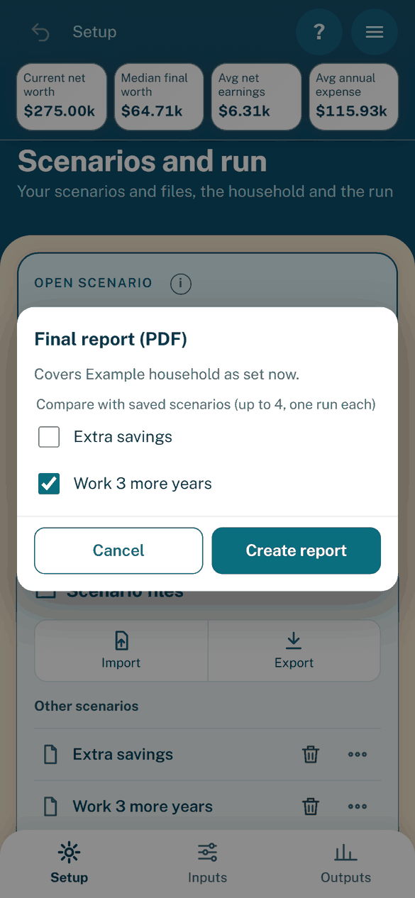

The app: Outputs
Purpose: read your results and run Monte Carlo, Compare, Optimize and the final report; continued from The app.
Outputs
The Outputs tab has four views: Summary, Plots, Compare and Optimize. Gamer style adds a fifth, Awards. Every figure and chart comes from the last Monte Carlo. The yearly values are the middle half average: the runs between the 25th and 75th percentile of final worth. Tables are not in the app. The Final report holds them.

Summary: the headline tiles, then Insights.


Plots: one chart at a time, with a Chart or Table switch.
Summary
Item |
What it shows |
|---|---|
Pinned strip |
Current net worth (today’s dollars), the median final worth of the last Monte Carlo, average net earnings after withdrawals (negative means a shortfall) and average annual expense. A figure reads “Running…” while it is recalculated. |
Median final worth |
Accounts only, with the middle half range under it. |
Home and cars |
Homes and cars less loans at the end. |
What beneficiaries keep |
Homes, cars and loans counted, then the beneficiaries’ income tax, estate tax, inheritance tax and selling costs taken out. Its “i” says why it can exceed the accounts-only figure. The rule is on Beneficiaries. |
Chance of running out |
The share of runs where the accounts run dry. |
Dollars line |
Says whether amounts are today’s dollars or inflation adjusted. See Inflation and dollars. |
Below the tiles are the Insights card (see Insights) and an Open the Final report button.
Next steps (Coach and Gamer)
In the Coach and Gamer styles, a Next steps card follows the tiles. It lists up to three gaps found in your inputs, such as an unpaid employer match, a child without a 529, or no HSA, Roth conversion or backdoor Roth. It shows before any Monte Carlo. At Low only the match gap shows.
Each gap shows what is missing, then, after a check, its result in a Checked: box, then one row of buttons, then What was tried.
Show me where opens the input. At Low a button opens the retirement plan setup.
Check (check what it is worth) runs a short test of a few values on the same random draws, with progress and Cancel.
Apply shows after a check and writes the best value as one Undo step. A result goes dim, with Apply off, once the settings change.
Not now hides a gap; Show N hidden brings it back.
Nothing changes until you tap Apply. Your risk comfort (see Effort and style) picks how a check scores better. While the card shows a person’s match gap, Insights leaves out that person’s unused-match line.
Plots


Total balance: the median line and the spread of outcomes around it.
Chart |
What it shows |
How to read it |
|---|---|---|
Total balance |
The balance band by year and a histogram of final values. |
The line is the median. The band is the spread. The histogram leaves out the lowest and highest 1% of runs. |
Balances |
Each account’s balance, stacked. |
The top of the stack is the middle half average total. |
Cash flow |
Spending only. Money in (Paycheck, Social Security, Sale proceeds) above zero. Money out (expenses, taxes) below it. |
The Left over line is money in minus money out. Below zero, the accounts pay for the year. |
Deposits and withdrawals |
Deposits above zero, withdrawals below it. |
Withdrawals, retirement deposits and the surplus are here. The RMD table is in the Final report. |
Taxes |
Taxes stacked by kind, with the local tax as its own slice. |
A hatched bar on top (Sales tax (in expenses)) is sales tax already inside spending. It is never added to a total. |
Expenses |
Spending by category. |
See the category rows in the table view. |

Money in and out by year.
Every chart by year shares these controls:
Axis: your age sits over the calendar year. Tap a chart to read every series at that point.
Chart or Table: the switch shows the same numbers as a table. The “i” by the title says what the chart shows.
Key: names are short, grouped and foldable. It lists only series the chart draws; a series that is zero every year is in the table only. Hover or tap for the full name. On a phone a long key folds to a Key row. Tap a key item to dim the other series; tap again or press Esc to clear.
Full screen: the button at the card’s top right draws the chart wider in landscape. Close, Esc or Back returns.
Show what beneficiaries keep: a box under Total balance, Balances and the Compare balance chart. It marks the Summary figure just past the last year, with a dashed step and a dot. It is on by default and the device remembers your choice.
Monte Carlo
The Monte Carlo runs on its own after start-up and after any change to the settings, the Runs or the Seed. It waits for the single run and a short pause. A change while it runs cancels it and starts a new one.
Run: the run bar above Summary and Plots reruns it by hand (“Run again” when the result is current).
Runs and Seed: set both on Setup. Pick 25 (default), 50 or 100 runs.
Progress: the bar shows runs done and the time left, estimated from your device. Cancel stops it at once and keeps the last finished result.
Stale result: after a change, the old result stays on screen, dimmed, under a note.
Does not run: while the settings need a fix or a comparison is running.
For the method, see the glossary and the deep-dive.
Compare
Compare always runs exactly two configs. Config A and Config B each list the current settings, the example household and your saved scenarios. They are never the same. To compare a strategy or a claim age, save a scenario for each choice.


Compare: pick A and B, then open Settings that differ.

The comparison chart: one median line and band per scenario.
How to run it:
Pick Config A and Config B.
Press Run. Each config runs the Runs set on Setup, on the same random draws.
Read the results.
Result |
How to read it |
|---|---|
Comparison table |
One row per scenario. It scrolls sideways with the scenario column in view. The “i” beside the heading says why the after-tax column can be higher. How Compare judges is in How Compare judges. |
Total balance |
Median line with 10th to 90th percentile shading per scenario. A dashed step ends each line at what its beneficiaries keep. |
Final account value |
One box per scenario. |
Settings that differ needs no run. This closed card, with a count in its title, lists every setting that differs, grouped by settings panel. Each row shows the setting, A’s value and B’s value. A block off on both sides lists nothing. The beneficiaries are one row: their shares must total 100%, so a merge takes the other side’s whole set.
Button |
What it does |
|---|---|
Merge A with B |
A takes B’s value. Applies at once. |
Merge B with A |
B takes A’s value. Applies at once. |
Undo last merge (n) |
Steps back through the last 20 merges. A config edited since is left alone. |
A → B (“Make B match A”) |
Copies every difference to B. A second tap confirms. |
A ← B (“Make A match B”) |
Copies every difference to A. A second tap confirms. |
After a merge, results show as changed until you press Run. The example household is never changed; its buttons are off with the reason. Buttons are also off while a comparison runs.
Optimize
Optimize searches your strategy settings for the best score. For what is searched and why, see Finding the best settings; for the score, see How Optimize scores. On Inputs, the Strategies chip opens it with Find the best settings in the optimizer.

The search keeps a change only if the score improves.

Result: each change, its gain, then Apply.
To run it:
Tick the options to search. Untick one to keep its current setting. An option that cannot apply shows Not available and its reason.
Choose a Risk preference (Growth-leaning, Balanced or Cautious).
Choose an Effort. Each label shows a time estimate for your device. Details are in the estimates.
Press Find best settings.
Option |
Notes |
|---|---|
Relocation state |
Tick up to 5 states. A line under the list estimates the extra runs and time. Staying put is always compared. |
Filing status (couples) |
On by default. Tries joint and separate returns for federal and state. Greyed out without a partner. |
Other options |
Each has an “i” saying what it tries, including 401k deposits and new accounts. |
Beneficiaries’ payouts are never searched. Apply does not change them.
While it runs:
Progress: a bar shows runs done against runs expected, the step, the settings tried and the time left.
Stop, show best so far: ends the search and keeps the best result.
Cancel: ends the search and keeps nothing.
Run budget: at the budget the search pauses. Choose Continue or Stop and keep best so far.
Keep the app open: a browser freezes the search when the phone sleeps. The page holds the screen awake. Leaving the app pauses the search (Paused while the app was in the background). Coming back resumes it (Resumed).
Closed mid-search: Optimize offers Resume the search or Discard. A saved search from another version of the app is refused: start a new one.
The result card has these parts:
Part |
What it shows |
|---|---|
Settings that change |
One card per change: the setting, its value now and the recommended value, and its gain (such as +$15,247 score). |
Total improvement |
The sum measured over M runs. Each gain was measured when the search took that change, so gains need not add up. |
Other settings kept |
One line, N other settings kept as they are. Tap to list them. |
Score breakdown |
Whether the best held up on fresh draws, the skipped strategies and notes. |
Apply these settings writes the changes as one Undo step and shows Applied N settings, with an Undo button. A Relocation result also moves the state of each home and rent starting at or after the move. Apply is off, with the reason, once the settings change after the search or when nothing changes.
Awards
The Awards view shows only in Gamer style. Pick another style and it goes; your progress stays.
Level and XP: eight levels, from Starter to Legend. A bar shows the XP to the next level.
Quests: eleven tasks, such as Fill in the basics or Compare two plans. Open ones come first, each with Show me. A Medium quest shows Unlocks at Medium at Low. A quest you finished stays done in every scenario.
Awards: thirteen badges. An earned one shows its date; a locked one says how to earn it.
Mini games: the four games, each with Play and your best stars (out of 3). With a partner, Claim Age Showdown has a Play button for each of you. Finishing a game earns XP once. Playing again earns nothing more. Close stops a game at any time and costs nothing.
Reset progress: asks first, then clears XP, quests and awards. What is already true does not count again until you do it anew.
Progress is kept on this device only, never in a scenario file. If the browser keeps no data, the view says progress lasts for this visit only.
Final report (PDF)


The picker: tick up to four scenarios to compare.
Final report (PDF) in the menu builds a US Letter PDF of your plan.
Tick up to four saved scenarios to compare with the current settings, or none.
Press Create report. The current settings run their Monte Carlo first if it is missing or stale. Each ticked scenario then runs once with the same runs and seed. Cancel is in the dialog.
The PDF downloads as scenario-report-date.pdf.
The body is at most four pages:
the headline figures and four key results (chance of success, median, 10th and 90th percentile final worth);
the Insights;
the charts (total balance, final values, balances, cash flow, taxes, expenses), each with a caption and a two to four sentence summary;
with scenarios ticked, a Comparison chart and one line per scenario saying how many settings differ and in which panels.
The summaries are built by fixed rules from the run’s own data, never by hand. They report jumps and drops in taxes and spending, a balance reaching zero, pay stopping, Social Security or withdrawals starting, the peak and the spread of final values. A cause is named only when the yearly table shows it in the same year. Otherwise the summary says what happened without a cause.
The addendum holds the tables in small type, with the header row repeated on each page:
Heading |
Tables |
|---|---|
Your settings |
Single settings by group, and every list of items (expenses, accounts, loans, homes, cars, children). |
Year by year results |
Cash flow by type, Accounts, Deductions, with the middle half average of the runs. Each row is led by your age. |
End of the plan |
Range of outcomes and What beneficiaries receive. |
Comparison |
With scenarios ticked: Settings that differ (one table per panel), then Results. |
A table too wide for the page splits into blocks that repeat the row label column. Every page footer shows the scenario name, the page number and “Estimates for education only; not financial, tax or legal advice.” The report works offline.
Insights
The Insights card on Summary and the Insights section of the report list up to five warnings and up to five opportunities. Fixed rules draw them from the last Monte Carlo and the inputs it ran on. A kind with no items is left out. Dollar figures are rounded to two significant figures. The card ends with “Estimates from this plan’s own numbers; not financial advice.”
Warnings, ranked by severity, each with its age:
the median balance falls 3 or more years in a row;
in a year without pay, the accounts hold less than 2 years of spending;
in a year without pay, withdrawals exceed 5% of the accounts’ balance;
the chance of running out is above 10%;
total taxes rise by at least 50% and $5,000 in one year;
an account is drained while one earlier in the withdrawal order still holds money;
spending and taxes exceed income plus withdrawals, so some goes unpaid.
Opportunities, ranked by dollar size, use simple arithmetic at the plan’s expected real return. They run no new simulation:
cutting the largest expense category by 10%;
what each $1,000 a year saved before retirement grows to;
an employer match not fully used;
cash above a 6-month reserve that earns less than the Investments account;
the three largest expense categories and their share of spending.
The wording is factual, never advice.